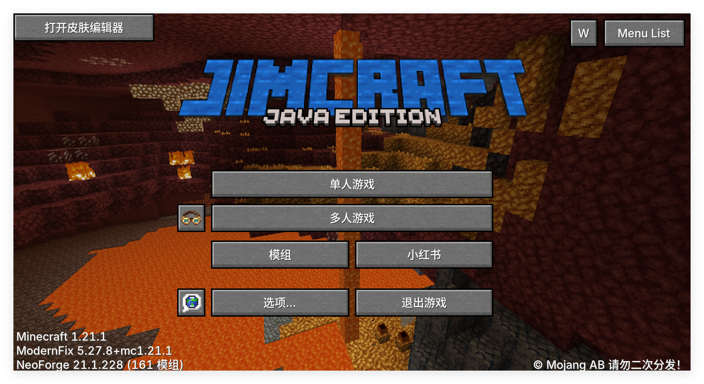

Terminal Minecraft Launcher文档
========================================
JimCraft v1.01 整合包介绍
========================================
【基本信息】
游戏版本：Minecraft 1.21.1
模组加载器：NeoForge 21.1.228
模组数量：129 个
推荐内存：6-8 GB
========================================
【整合包特色】
========================================
一、科技自动化
以 Create（机械动力）为核心，包含 11 个附属模组：
Create Big Cannons（火炮系统）
Create New Age（电气时代）
Create Ore Excavation（矿脉开采）
Create Jetpack（喷气背包）
Create Deco、Create Encased、Create: Copycats+ 等
二、维度探索
The Aether（天境）：挑战天境守护者
The Undergarden（深暗之园）：探索深渊世界
Terralith：全面重制主世界地形
Nullscape：末地地形大修
Amplified Nether：放大化下界
Biomes O' Plenty：超多生物群系
Gardens of the Dead：下界花园群系
三、农业与美食
基于 Farmer's Delight（农夫乐事），扩展多个乐事附属：
Miner's Delight（矿工乐事）
Ender's Delight（末影乐事）
Crabber's Delight（蟹农乐事）
Pineapple Delight（凤梨乐事）
DrinkBeer Refill（喝啤酒啦：再来一杯）
3D Placeable Food（3D 食物）
四、装备与战斗
Silent Gear（寂静装备）：高度自定义装备系统
Guns++：多种枪械
Paraglider（滑翔伞）：空中滑翔探索
Waystones（传送石碑）：快速旅行
Carry On：搬起方块和实体
Corpse：死亡尸体保留物品
PlayerRevive：玩家救援
Enchanting Infuser：附魔灌注台
五、建筑与装饰
Macaw's Roofs：屋顶建材
Another Furniture：别样家具
Cozy Cabins and Cottages： cozy 小屋
Oh The Trees You'll Grow：更多树木
Ecliptic Seasons：节气系统（四季变化）
Sit：席地而坐
六、辅助与优化
JEI：物品管理器
Jade：方块信息查看
JourneyMap：旅行地图
Xaero's Minimap：小地图
Sodium + Sodium Extra：渲染优化
Iris：光影加载器
Lithium：性能优化
ModernFix：现代修复
C2ME：并发区块管理
Ferrite Core：内存优化
Clumps：经验球合并
AppleSkin：饥饿值显示
Better Advancements：更好进度界面
Chat Heads：聊天头像
Inventory Move：边拿边走
IMBlocker：输入法冲突修复
七、FTB 系列
FTB Quests：任务系统
FTB Teams：团队系统
FTB Essentials：基础功能
FTB Ranks：权限管理
========================================
【完整模组列表】
========================================
共 129 个模组，主要分类如下：
科技类：Create、Create Big Cannons、Create Deco、Create Encased、Create Jetpack、Create New Age、Create Ore Excavation、Create: Copycats+、Create: Easy Structures、Create: Framed、Create structure、Flywheel、Ponder
维度/生物群系类：Aether、Undergarden、Terralith、Nullscape、Amplified Nether、Biomes O' Plenty、Gardens of the Dead
结构类：CTOV、Repurposed Structures、Dungeons Arise: Seven Seas、Explorations+、Lithostitched
农业类：Farmer's Delight、Miner's Delight、Ender's Delight、Crabber's Delight、Pineapple Delight、DrinkBeer Refill、3D Placeable Food
装备类：Silent Gear、Silent Lib、Guns++、Paraglider、Waystones、Carry On、Corpse、PlayerRevive、Enchanting Infuser、Sophisticated Core、Wooled Boots
装饰类：Macaw's Roofs、Another Furniture、Cozy Cabins and Cottages、Oh The Trees You'll Grow、Bits 'n' Bobs、Ecliptic Seasons、Sit
辅助类：JEI、Jade、JourneyMap、Xaero's Minimap、AppleSkin、Better Advancements、Advancement Plaques、Colorful Hearts、Chat Heads、Inventory Move、IMBlocker
优化类：Sodium、Sodium Extra、Iris、Lithium、ModernFix、C2ME、Ferrite Core、Clumps
库/API类：Architectury、Balm、Cloth Config、Collective、CorgiLib、Curios API、GeckoLib、GlitchCore、Kotlin For Forge、KubeJS、owo-lib、Patchouli、Puzzles Lib、Rhino、TerraBlender
FTB系列：FTB Essentials、FTB Library、FTB Quests、FTB Ranks、FTB Teams
========================================
【下载与支持】
整合包版本：JimCraft v1.01
所需 Java：Java 21
模组加载器：NeoForge 1.21.1
========================================
